Bediengrundlagen
Anmeldung
Wenn es keine öffentlichen Inhalte gibt, wird der Nutzer automatisch auf die Login-Seite geleitet.
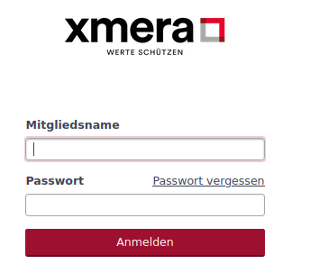
Ist die Zwei-Faktor-Authentifizierung aktiviert, erscheint anschließend die Abfrage nach dem Code.
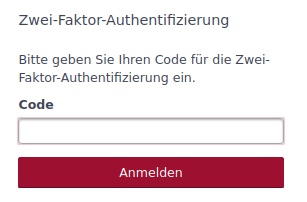
Anschließend wird die Hauptseite von xmera Omnia angezeigt. Diese beinhaltet das System Dashboard.
Anwendungsmenüs
In xmera Omnia gibt es vier Menüs:
-
Topmenü
-
Hauptmenü
-
Nutzermenü
-
Objektmenü (nur bei Objektseiten)
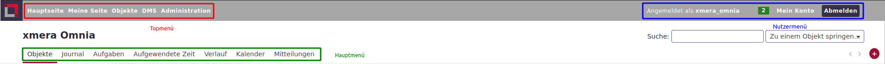
- Topmenü
-
Das Topmenü, im linken Bereich des Seitenkopfs, führt zu den Hauptelementen von xmera Omnia:
-
Hauptseite: Zugang zu den Dashboards
-
Meine Seite: Zugang zur persönlichen Übersichtsseite
-
Objekte: Zugang zu den Objekten (z.B. Projekte, Prozesse, Assets)
-
DMS: Zugang zum Dokumentenmanagement (DMS)
-
- Nutzermenü
-
Das Nutzermenü, im rechten Teil des Seitenkopfs, führt zu den persönlichen Daten und Einstellungen sowie zur Abmeldung aus dem System:
-
Angemeldet als Nutzername: Link zum Nutzerprofil
-
Neue Mitteilungen: Anzahl der neuen Mitteilungen und Verlinkung zu einer Liste mit ungelesenen Mitteilungen
-
Mein Konto: Link zu den Nutzereinstellungen
-
Abmelden: Button zur Abmeldung des Nutzers
-
- Hauptmenü
-
Das Hauptmenü wird nach einem Klick auf Objekte im Topmenü angezeigt. Es bietet Zugriff auf die aktivierten Objektmodule, dessen Inhalte systemweit angezeigt werden können. Dazu gehören:
-
Objekte: Objekt- und Assetregister
-
Journal: Chronologische Aufzeichnung von Systemveränderungen
-
Aufgaben: Globale Sicht auf alle Aufgabenelemente (Sicherheitsanforderungen, Risikobewertungen, Maßnahmen, …)
-
Aufgewendete Zeit: Dokumentierte Zeiten mit und ohne Zuordnung zu Aufgabenelementen
-
Verlauf: Zeitliche Abfolge von allen geplanten Aufgaben in Form eines Gantt-Diagramms
-
Kalender: Kalender Ansicht von allen geplanten Aufgaben des Systems
-
Mitteilungen: Liste aller Mitteilungen des Systems
-
| Die globale Systemübersicht dem Nutzer stets nur jene Elemente, die er aufgrund seines Berechtigungsprofils sehen darf. |
- Objektmenü
-
Das Objektmenü wird ausschließlich in Objektseiten angezeigt und bietet Zugriff auf die aktivierten Objektmodule.
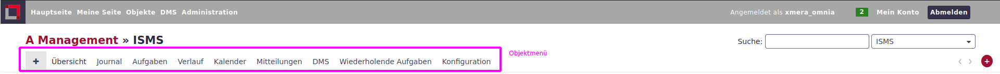
Bedienoptionen
Suchen / Schnellnavigation
Im oberen rechten Bereich der Seite, unterhalb des Nutzermenüs, befindet sich ein Such- und Schnellnavigationsbereich.
Damit wird der Zugriff auf die zuletzt besuchten Objekte erleichtert und eine Suche über alle Objekte und deren Inhalte ermöglicht.
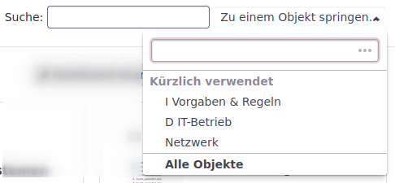
Über diesen Bereich ist eine direkte Navigation zu den gewünschten Objekten möglich.
- Schnellnavigation
-
Wird, wie im Bild oben zu sehen, das Drop-Down-Menü durch Klick auf Zu einem Objekt springen geöffnet, so werden eine Suchzeile, in der nach Objekten gesucht werden kann, und die kürzlich verwendeten Objekte angezeigt.
- Suche
-
In dem Suchfenster kann ein Text eingegeben werden, nach dem in allen Objekten und den darin enthaltenen Informationen gesucht wird. Die Suche beginnt nach dem die Eingabe bestätigt wurde. Danach werden die Suchergebnisse angezeigt.
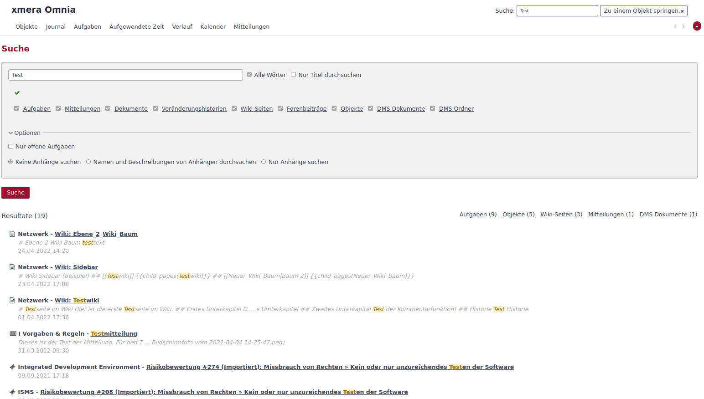
Im oberen Bereich (grau hinterlegt) kann die Suche weiter eingeschränkt oder der Suchtext angepasst werden.
Die Suche wird, wenn diese aus einem Objekt aufgerufen wird, auf das Objekt mit seinen Unterobjekten eingegrenzt. Unterhalb des grauen Bereichs sind die Suchergebnisse aufgeführt.
| Wird in das Suchfeld die ID einer Aufgabe (Sicherheitsanforderungen, Risikobewertungen, Maßnahmen, …) eingegeben, so bekommt der Nutzer diese Aufgabe direkt als Einzelansicht angezeigt. |
Breite des Inhaltsbereichs anpassen
Der Inhaltsbereich kann in xmera Omnia auf eine feste Breite begrenzt werden, wodurch das Lesen von Texten angenehmer wird. Im nachfolgenden Bild ist der Inhaltsbereich entsprechend begrenzt, was die gelben Flächen verdeutlichen sollen. Diese Breite ist auf den meisten Seiten der Standard. Der gelb markierte Randbereich rechts und links wird je nach Größe des Browserfensters automatisch angepasst.
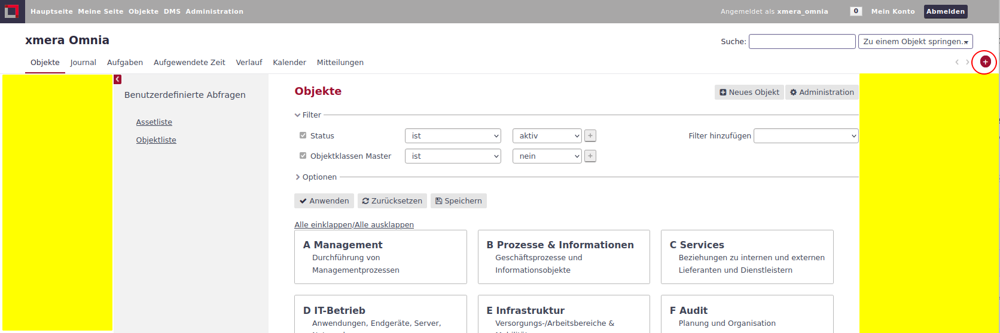
Bei Bedarf kann der selbe Inhalt auch über die gesamte Seitenbreite angezeigt werden. Durch einen Klick auf das rote Plus-Symbol (rot umrandet im Bild oben) kann der Inhaltsbereich vergrößert werden.
Das folgende Beispiel zeigt die gesamte Seitenbreite.
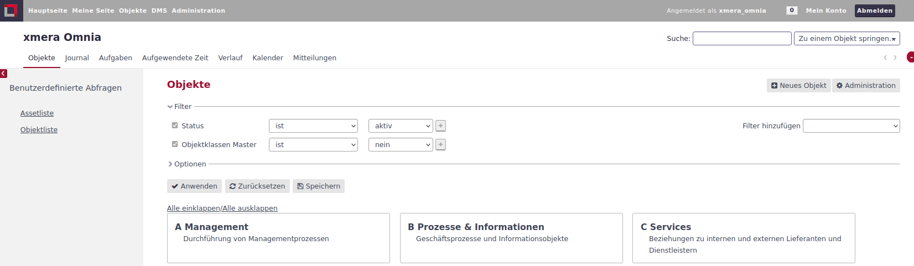
Objekt- und Aufgabenlisten
Die Darstellung von Objekten und Aufgaben kann durch Filtern, Gruppieren und Tabellenspaltenauswahl an die Anforderungen der Nutzer angepasst und gespeichert werden.
Das untere Bild zeigt den Filterbereich (grün umrandet) sowie weitere Optionen zum Gruppieren und zur Auswahl von Tabellenspalten (magenta umrandet) am Beispiel der Sicherheitsanforderungen.
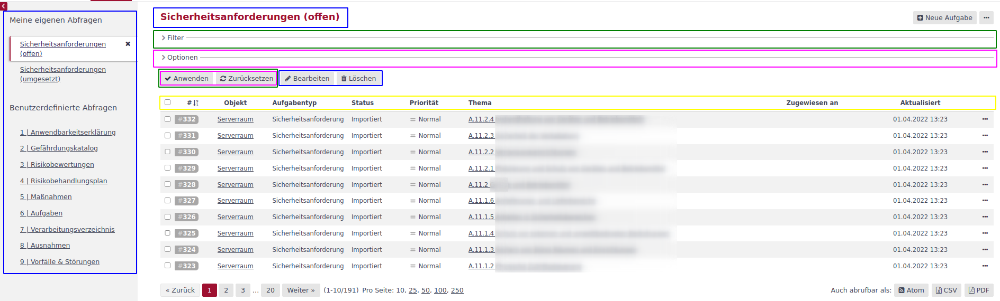
Auf diese Weise können individuelle Listen durch Abfragen (blau) gestaltet werden. So erhalten Nutzer verschiedenste Sichten auf die umfangreiche Datenbasis des Informationssicherheitsmanagementsystems (ISMS) und damit einen schnellen Überblick.
Über den Button 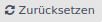 wird der Filter wieder auf die Standard-Liste zurückgesetzt.
| Mit der xmera Omnia Philosophie "Alle Assets sind Objekte und jede Maßnahme / Handlung ist eine Aufgabe" läßt sich mit den Objekt- und Aufgabenlisten ein ISMS effizient gestalten. |
- Objektliste
-
Die Objektliste zeigt alle Objekte des Systems. Sie ist über das Topmenü erreichbar. Objekte werden in der Standardansicht entweder als Karten oder in Tabellenform angezeigt. Die Standardansicht wird im Administrationsbereich angepasst.
- Aufgabenliste
-
Die Aufgabenliste listet alle Aufgaben des Objekts, in dem diese aufgerufen wurde, sowie die Aufgaben der unterlagerten Objekte. Dabei werden in der Standardliste nur die offenen Aufgaben angezeigt.
Filtereinstellungen
Der Filterbereich einer Liste kann durch den Pfeil ausgeklappt und wieder eingeklappt werden. In den Zeilen des Filterbereichs werden die aktuell gewählten Einstellungen angezeigt.
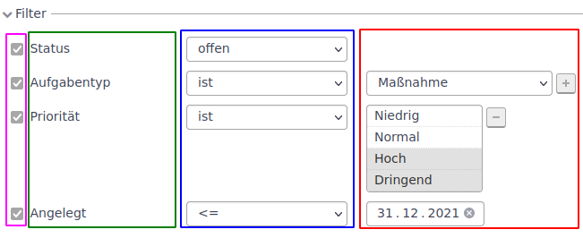
Die 1. Spalte (magenta) zeigt an, ob der Filter in der Zeile aktiv ist. Die 2. Spalte (grün) zeigt die Filterattribute. Die 3. Spalte (blau) zeigt die Filterregel an. Die 4. Spalte (rot) zeigt den Filterwert.
Wie zu erkennen ist, ist der Aufbau einer Zeile an den Attributtyp angepasst. Auch der zur Verfügung stehende Regelsatz ist spezifisch für jeden Attributtyp. Im folgenden Beispiel ist der Regelsatz für ein Datum dargestellt.
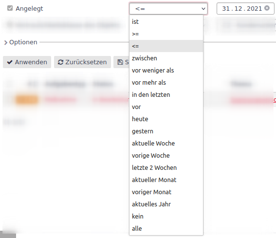
Die ausgewählten Regeln werden durch Klick auf den Button 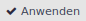 angewendet.
- Filter hinzufügen
-
Im rechten oberen Bereich des Filterbereichs befindet sich das Auswahlfeld für Filter hinzufügen.
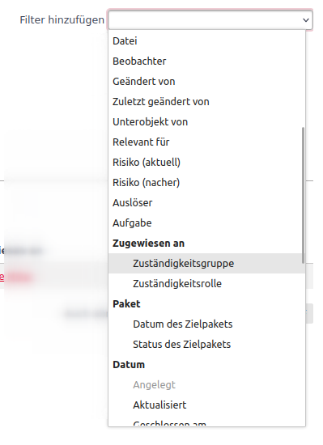
Über das Auswahlfeld werden die zur Verfügung stehenden Attribute angezeigt. Durch Klick auf das gewünschte Filterattribut wird dieses der Filterliste hinzugefügt.
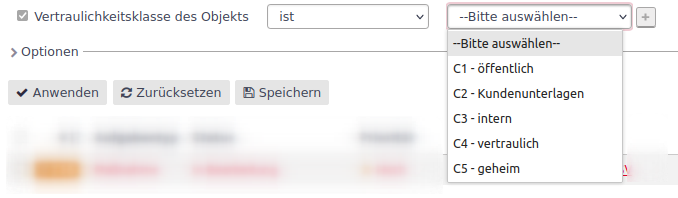
Wird nach einem Attribut mit festen Werten gefiltert, so kann der gewünschte Wert ausgewählt werden. Durch Klick auf bzw. kann die Mehrfachauswahl aktiviert werden.
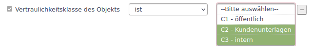
Durch Drücken der STRG-Taste bei der Auswahl oder der SPACE-Taste und wählen des 1. und letzten Elements einer Auswahl, können mehrere Elemente gewählt werden.
Die Darstellung der Mehrfachauswahl werden nur 4 Elemente dargestellt. Durch scrollen in der Liste werden weitere Elemente angezeigt. Die neu erstellte Regel wird durch Klick auf den Button angewendet.
- Filter löschen
-
Zum Löschen einer Filterzeile ist diese über den Haken am Anfang der Zeile auf inaktiv zu setzen und anschließend auf den Filter anzuwenden. Mit dem Anwenden des Filters werden die auf inaktiv gesetzten Zeilen gelöscht.
Gestaltungsoptionen
- Karten / Liste
-
Für Objekte besteht, wie im folgenden Bild zu sehen, die Möglichkeit eine Kartenansicht zu wählen.
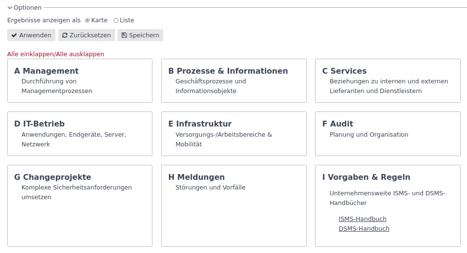
In der Kartenansicht bestehen keine weiteren Anpassungsmöglichkeiten. Über den Karten gibt es noch den Button Alle einklappen/Alle ausklappen mit der in den Objektkarten die Unterobjekte ein- bzw. ausgeblendet werden.
In der Listenansicht werden die Objekte tabellarisch dargestellt. In dieser Form ergeben sich, wie im folgenden zu sehen, weitere Einstellungsmöglichkeiten.
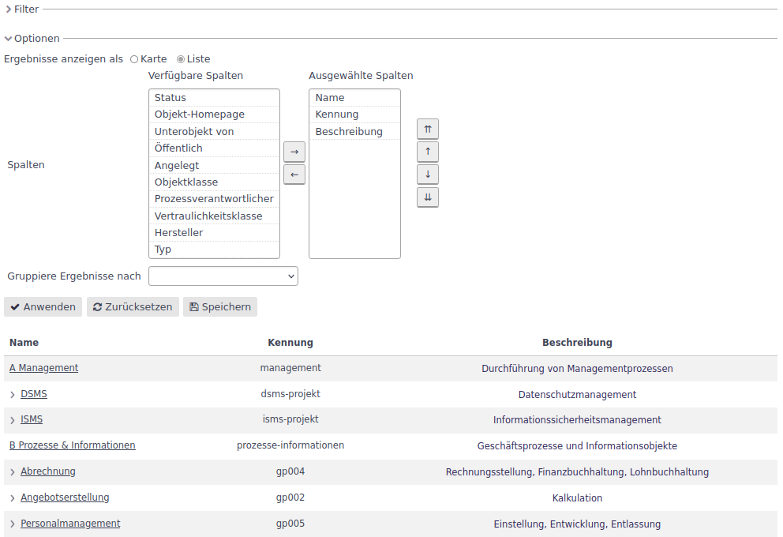
- Spaltenauswahl
-
Über die Spaltenauswahl besteht die Möglichkeit die gewünschten Tabellenspalten festzulegen. Bei der Spaltenauswahl sind im linken Bereich die Verfügbaren Spalten und auf der rechten die Ausgewählten Spalten zu sehen.
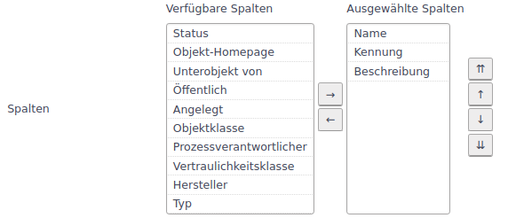
Durch markieren einer Verfügbaren Spalte und Klicken auf den 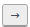 werden die markierten Spalten in den Bereich Ausgewählte Spalten verschoben. Werden Spalten in der Liste Ausgewählte Spalten markiert, werden diese mit dem Klick auf den Button 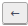 in die Liste Verfügbare Spalten verschoben.
Die Reihenfolge der Ausgewählten Spalten wird durch die Tasten links von der Liste Ausgewählte Spalten gesteuert. Die markierten Objekte werden mit dem Klick
-
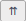 ganz noch oben verschoben
-
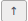 um eine Position nach oben verschoben
-
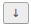 um eine Position nach unten verschoben
-
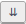 ganz nach unten verschoben
Mit Klick auf den Button werden die Änderungen übernommen.
-
- Gruppierung
-
Mit der Option Gruppieren kann die Liste nach einem definierten Attribut gruppieren. Im Beispiel wird die Liste nach dem Attribut Kapitel gruppiert.
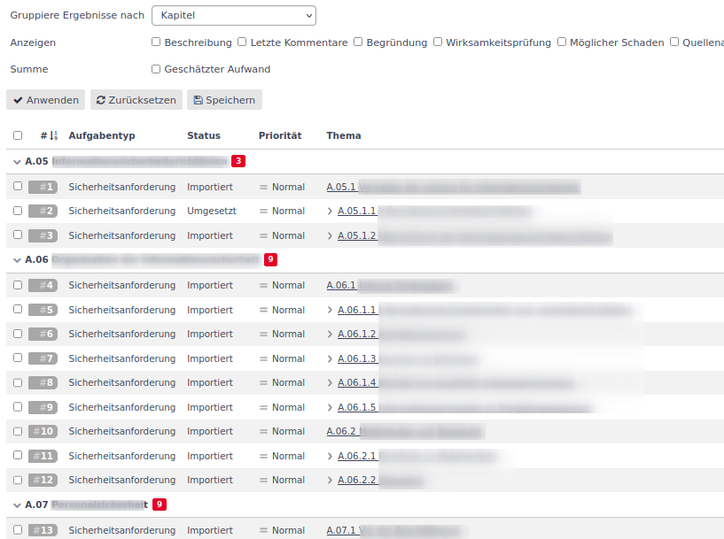
Über das Auswahlfeld im Bereich Gruppiere Ergebnisse nach werden die möglichen Gruppierungsattribute angezeigt. Mit Klick auf den Button werden die Änderungen übernommen.
In der gruppierten Liste werden die Anzahl der Elemente pro Gruppe als rot hinterlegte Zahl dargestellt. Die Elemente der Gruppe können über Klicken auf den Pfeil eingeklappt bzw. über den Pfeil ausgeklappt werden.
- Summe
-
Sind Zahlenwerte teil der Attribute, so kann man pro Gruppe auch den Summenwert darstellen.
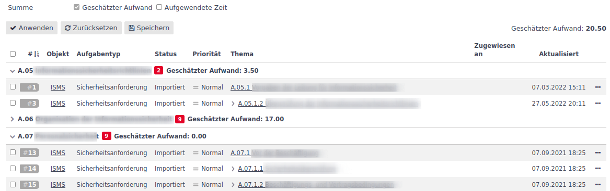
Der Summenwert wird in der Gruppenzeile dargestellt.
- Anzeigen
-
Mit der Option Anzeigen können ausgewählte Felder vom Typ Langtext in eine Zeile mit eingeblendet werden.
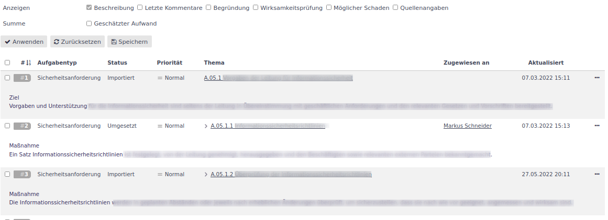
In der Liste werden unterhalb der Spaltenwerte die ausgewählten Texte (im Beispiel oben der Text der Bemerkung) angezeigt.
- Sortierungen
-
In welcher Form die Liste sortiert wird, wird über das Symbol
 für aufsteigend bzw.
für aufsteigend bzw.  für absteigend sortiert links neben der Spaltenüberschrift der Spalte, nach der sortiert wurde, dargestellt.
für absteigend sortiert links neben der Spaltenüberschrift der Spalte, nach der sortiert wurde, dargestellt.Durch einen Klick auf dieselbe Spaltenüberschrift wird die Sortierrichtung geändert. Durch Klick auf eine andere Spaltenüberschrift wird dann nach dieser Spalte sortiert.
Eine Mehrfachsortierung ist über eine Abfrage möglich.
Persistente Abfragen
Eine Abfrage in xmera Omnia ist eine gespeicherte Zusammenstellung von Filtern, Darstellungsoptionen und Sortierungen. Es wird dabei zwischen eigenen Abfragen, den Benutzerdefinierten Abfragen, und Abfragen für die Allgemeinheit unterschieden. Benutzerdefinierte Abfragen stehen nur dem Benutzer, der sie erstellt hat, zur Verfügung.
- Abfragen aufrufen
-
Die für die Liste zur Verfügung stehenden Abfragen werden in der linken Sidebar angezeigt.
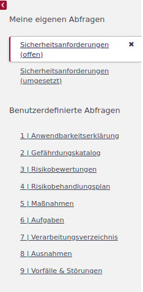
Ist eine Abfrage aus der Sidebar aktiv, wird sie weiß hinterlegt dargestellt. Im Bild oben ist das die Abfrage Sicherheitsanforderungen (offen). Durch einen Klick auf das X neben der aktiven Abfrage wird diese geschlossen und die Liste auf den Standard (alle offenen Aufgaben aus Objekt und Unterobjekten) zurückgesetzt.
Durch Klick auf eine andere Anfrage in der Sidebar öffnet die gewählte Abfrage.
- Abfrage erstellen
-
Eine Abfrage wird erstellt, in dem eine Liste mit den gewünschten Filter- und Gestalungsoptionen erstellt, angewendet und diese anschließend gespeichert wird.
Nachdem eine Liste erstellt wurde, erscheint der Button
 . Wird das Speichern geklickt, erscheint der Konfigurationsdialog.
. Wird das Speichern geklickt, erscheint der Konfigurationsdialog.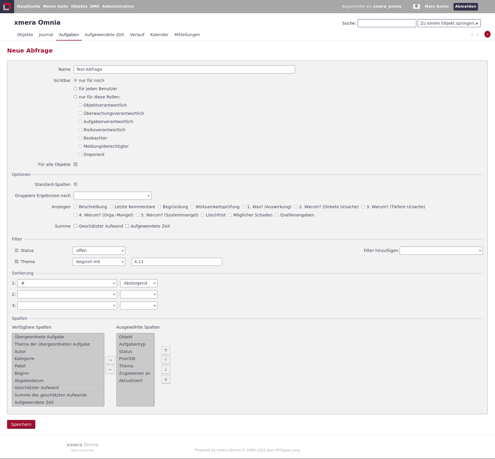
Minimal ist der Name der Abfrage festzulegen. Im Folgenden kann die Abfrage allen Nutzern oder auch nur bestimmten Rollen verfügbar gemacht werden. Wird der Haken Für alle Objekte entfernt, steht die Abfrage nur in dem erstellten Objekt zur Auswahl.
Anschließend können in dieser Maske weitere Filter-, Sortier- und Spalteneinstellungen vorgenommen werden.
Bei den Sortierung besteht in der Maske auch die Möglichkeit mehrstufig in bis zu drei Stufen zu sortieren.
Mit Klick auf den Button
wird die Abfrage gespeichert und es erscheint die gewünschte Liste. - Abfrage bearbeiten
-
Um eine Abfrage bearbeiten zu können, ist diese zunächst aufzurufen. Anschließend kommt man durch den Klick auf den Button
 in die Eigenschaftsmaske der Abfrage, in der die Filter und Gestaltungsoptionen angepasst werden können. Mit dem Speichern werden die Anpassungen übernommen und die geänderte Abfrage aufgerufen.
in die Eigenschaftsmaske der Abfrage, in der die Filter und Gestaltungsoptionen angepasst werden können. Mit dem Speichern werden die Anpassungen übernommen und die geänderte Abfrage aufgerufen. - Abfrage löschen
-
Zum Löschen einer Anfrage ist die zu löschende Abfrage zu öffnen. Durch Klicken auf den Button
 wird nach Bestätigung in einer Sicherheitsabfrage die Anfrage gelöscht.
wird nach Bestätigung in einer Sicherheitsabfrage die Anfrage gelöscht.